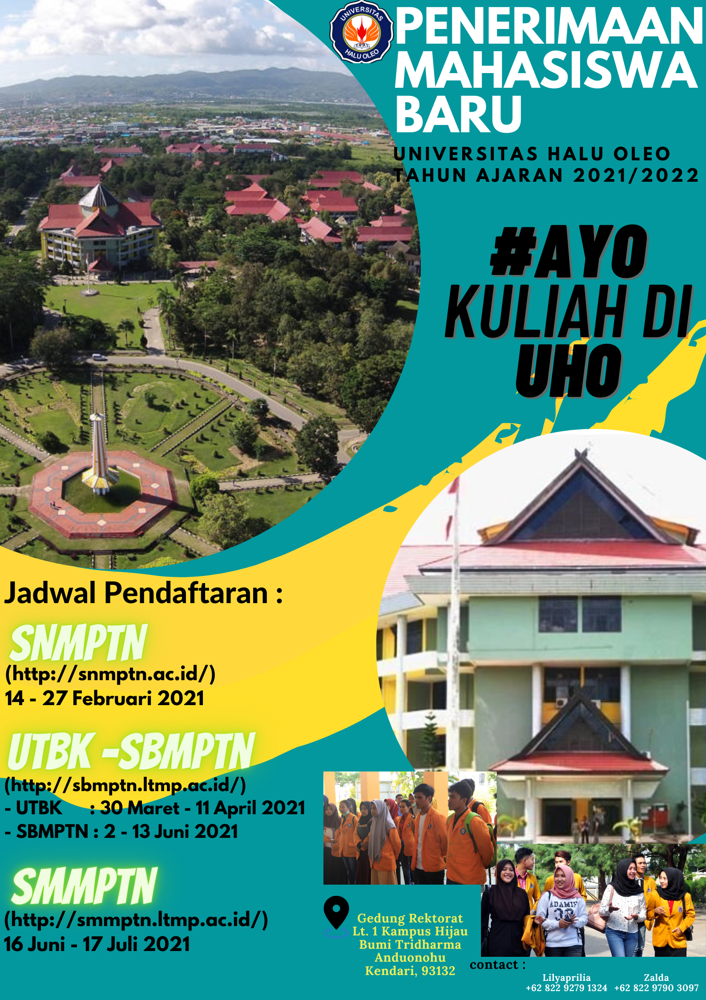

Penerimaan Mahasiswa Baru di Masa Pandemi

Dengan adanya akses internet yang semakin mudah, tentu saja hal ini terasa bermanfaat bagi kehidupan kita. Lagi-lagi kita sedang dianjurkan untuk banyak mengurangi aktivitas diluar rumah. Dalam dunia perkuliahan saat ini tengah beradaptasi untuk merubah beberapa agenda persiapan seleksi mahasiswa baru. Salah satunya dengan melaksanakan pendaftaran online hingga masa registrasi ulang secara online.
Namun di sisi lain, tentu ada hal yang terasa sedikit asing bagi kita. Untuk beradaptasi melakukan segala hal secara online. Misalnya, pemilihan universitas, baik universitas swasta maupun negeri. Mengingat bahwa bepergian ke luar daerah sekarang sangat ketat dan harus mengikuti protokol baru. Tentu saja hal seperti ini menjadi suatu pertimbangan serius untuk memilih universitas bagi calon mahasiswa baru.
Maka dari itu,Pihak Universitas Halu Oleo membuat link pendaftaran bagi calon mahasiswa yang sudah tertera di dalam poster. Hal terserbut dilakukan untuk mengikuti serta menjaga protokol kesehatan. karena dalam pandemi ini, tidak memungkinkan para calon pendaftaran mahasiswa baru untuk melakukan registrai pendaftaran di kampus.